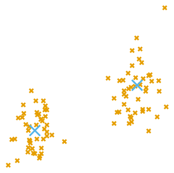

Kshiteej Sheth

Academic Experience
I am a fourth year CS PhD student at EPFL working with Michael Kapralov. I am broadly interested in optimizing the memory/runtime of LLM inference and fine-tuning. In the past I have also worked on fast algorithms for large-scale & high-dimensional data analysis and numerical linear algebra.
Industry Experience
I spent Fall 2024 as an Applied Science intern at Amazon Luxembourg where I deployed ML and Optimization based solutions to production on AWS Infra for internal customers. I have also worked with Anirban Dasgupta and Dinesh Garg (IBM Research, Bengaluru) on randomized linear algebra. In the distant past I also spent a summer at Caltech on a SURF fellowship with Ashish Mahabal on deep learning for astronomy.
Publications
LLM Inference & Fine-Tuning Optimization
-

-
Improved Algorithms for Kernel Matrix-Vector Multiplication
ICLR 2025 • PosterBest Paper — ICML 2024 workshop on Long Context Foundation ModelsSubquadratic-time numerical linear algebra on attention matrices for long-context LLMs.
Fast numerical linear algebra and large-scale data analysis
-

Sublinear Time Low-Rank Approximation of Hankel Matrices
SODA 2026 -

-
- 
-

-

Teaching
- EPFL
- CS-450 Advanced Algorithms
- CS-250 Algorithms
Service
- Conference review: ICLR, NeurIPS, ICML.